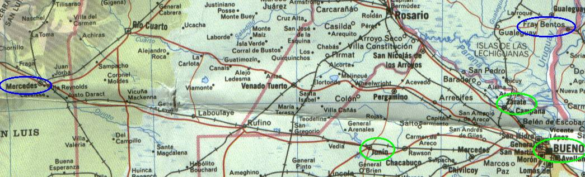

<< anterior || índice || próxima >>
Trecho Mercedes - Fray Bentos

- Mercedes
- Junín
- Buenos Aires
- Zárate
- Fray Bentos
DICAS
- Guarde bastante dinheiro para os $$$pedágios$$$
JUNIN E A NOITE NO POSTO
Pela segunda vez, dormimos num posto de gasolina.
Procuramos um monte em junin uma pousada ou hotel barato, mas não achamos, então fomos dormir num posto falcon fox da estrada.
Foi massa, o posto tinha lanchonete e banheiro e a noite foi agradável. dormir na Toyota é massa, os bancos são largos, é confortável até :)
BUENOS AIRES E OS PEDÁGIOS MALDITOS
À medida que se chega perto de Buenos Aires, o número pedágios por quilômetro rodado aumenta consideravelmente. Foram 6 pedágios em 150 km, um absurdo.
O plano inicial era pegarmos uma balsa de Buenos Aires até o uruguai, pra não ter que dar a volta no mar de la plata. Chegamos lá e ninguém soube nos informar da merda da balsa nem tinha placas, então partimos para o plano b.
Mas foi melhor assim, pudemos conhecer o interior do uruguai.
De Buenos Aires seguimos ao norte, passando por zárate em direção a fray bentos. Tem umas pontes grandes sobre alguns rios no caminho.
<< anterior || índice || próxima >>